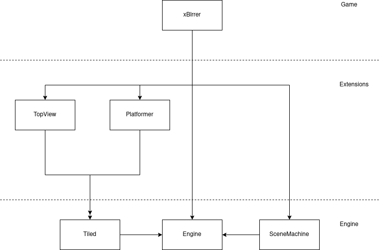

Wait, you said you wanted to work on a game, now there is a new entry without game related news. Whats wrong with you?Yesterday I realised how much copying and pasting I have to do to create a blog entry. It's not very useful in the long run. So I decided to create a web component for individual blog entries.
What is a web component?
Anyone who has written HTML knows DOM elements like <div> and
<img>. With a web component, you can create your own HTML tags. This
way, I don't have to copy the entire structure over and over again, but can simply use
the following blog:
<blog-entry
title="Day 3: Blog Improvements"
author="DialThetti"
date="31.03.2021"
tags="Blog, Angular"
>
<span slot="preview">
...
</span>
<span slot="full">
...
</span>
</blog-entry>
How does it work?
To make this blog entry web component work, I created a new repository . This contains an Angular project. Angular is a TypeScript-based web framework. With it I can easily create components, define input and output, and write encapsulated Javascript logic. I don't have to worry about the site as a whole when I create a web component, just the component itself, because all the functionality stays in that component. You can compare it roughly with the old iframes.
For more information on how to build your own web components with angular, I recommend this guide.
Why an Engine
But DialThetti, why do you need an engine? Other games just have spaghetti code and also works, or are implemented as a unity project which consumes 7GB of data. Why not using these magical wonders?
This is a good question. First of, I dont have the Thu'um, which is required to make a sucessful game:
IT JUST WORKS
I have to follow more traditional ways of game making. I would like to know what happens under the bonnet when i develop a game. In addition, this project should also be a kind of showpiece to make my skills presentable.
I would also like to be able to reuse the basic building blocks of the game, be it for another platformer or a top down RPG like 'The legend of Zelda'. That is, all the basic elements like tiles, timer, sound and file input/output can be bundled and neatly decapsulated. This means I never have to start from scratch again with the next project.
Since I am only a single developer, I have to try to have tools check my quality. A clean division of the project is also beneficial for this.
On the subject of third-party libraries: Of course I can use a third-party system and pray that with 2-3 clicks and wizards what I want will happen. But I want to know what happens internally. I want a small system, without overhead and unnecessary dependencies.
As a basic structure, I have thought of the following: 
Even if layer architectures can lead to problems now and then, I would still use these 3 layers:
- Engine layer
- on which all game-unspecific classes, functions and algorithms are located
- Extensions layer
- which provides extended functionalities, and can be added or omitted depending on the game
- Game layer
- where the specific levels, entities and mechanics reside. These should be so specific that they cannot be reused
Yet another Platformer
After a long period of extreme programming, I decided to take the project of developing a platformer game seriously once again. It all started with a tutorial by Meth Meth Method on Youtube, implementing Super Mario Bros. in Javascript and HTML 5.
Right from the start, I thought Typescript might have some advantages, and adopted his steps in Typescript. In the process, I managed to make one or two abstractions and/or revisions, so that I ended up with a modular code state. In this, I could replace the game (here Super Mario) on an engine at will.
I decided to remove all Super Mario resources and build a new game inspired by various platformers on the engine.
For this, however, it was important to have a stable engine. After weeks of refactorings and try and error, I had a working code, but neither tests nor a build path. So this should be my first step. A combination of Github workflows and sonarcloud should give me enough confidence about my code to start the project.
At the moment I have 1.2k lines of typescript code, with a still too low test coverage, but the worst mistakes are already removed, so I can start the actual game soon.
The project will be open source as it is developed, and I will continue to report as the game grows.